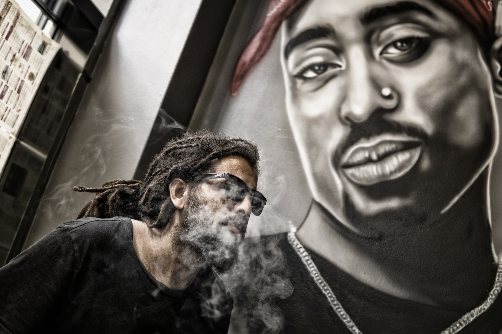
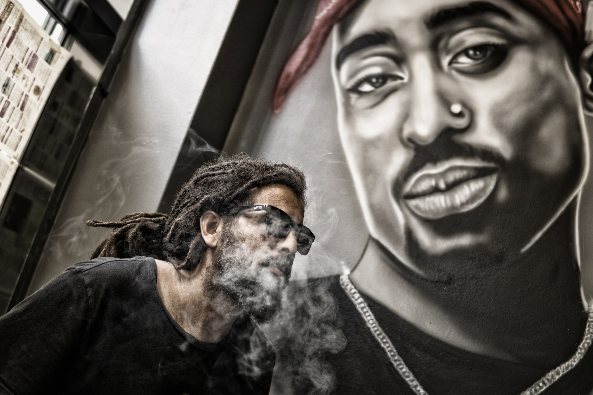

Hey, I'm Oliver.
I am a street art and event
photographer based in Brooklyn
NYC. I put my passion for visual
storytelling to the service of the
people in unique urban places


 



Street Art
Street art focused on genuine emotions
Real customer connection
Unique memories in orginal urban environment

Wedding
Beautiful, emotive and contemporary wedding
Focus on what really matters
Make your memories last forever